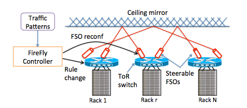

Wireless Networking and Systems (WINGS) Lab
| SpecSense - Large-Scale Distributed Spectrum Sensing |
|---|
|
In SpecSense we envision a large-scale RF spectrum monitoring system that will feed into multitudes of spectrum-aware applications forming an entire ecosystem of spectrum data, analytics, and apps. Our goal is to investigate what it takes to develop an end-to-end enabling platform to support this vision. The SpecSense system (i) crowdsources spectrum monitoring using low-cost, low-power custom-designed hardware, and (ii) provides necessary API support for spectrum-aware apps via a central spectrum server/database platform. The project addresses various algorithmic and systems-level challenges for SpecSense.
Project Webpage: https://www3.cs.stonybrook.edu/~samir/specsense Publications: IEEE INFOCOM'20, ACM/IEEE IPSN'20, ESORICS'19, PAM'19, IEEE DySPAN'19, IEEE DySPAN'18, IEEE INFOCOM'18, IEEE INFOCOM'17, ACM HotWireless'16, ACM CoNEXT'14, ACM MobiCom'13 |
| Quality of Experience: Video Streaming, AR/VR, Web Browsing, Mobile Internet Applications |
|---|
|
This line of work aims to improve the quality of experience (QoE) of mobile Internet-based applications (e.g., 4K/8K Video Streaming, 360-Degree Video Streaming, Web Browsing, AR/VR). With the tremendous growth in diverse mobile applications, devices, and networks, identifying the root cause of the issues behind the poor user QoE has become extremely challenging. In this work, we target providing the a good QoE for users while minimizing the resource consumption both in terms of network capacity and device hardware.
Publications: WACV'21, IEEE INFOCOM'20, IFIP Networking'19, ACM SIGCOMM IMC'18, ACM/IEEE IWQoS'18, USENIX NSDI'17, ACM CoNEXT'16, ACM MMSys'16, ACM IMC'14 |
| Backscatter-based Tag-to-Tag Networking |
|---|
|
This project develops a prototype RF tag platform called RIBBN (Research Infrastructure for Backscatter-Based Networks) that uses the principle of backscatterd communication (similar to RFID), but there is no requirement of RFID readers or equivalent devices. The tags have the ability to communicate among themselves using completely passive backscatter modulation. The vision is developing a modular/extensible, programmable and powerful platform that will drive the future Internet of Things.
Project Webpage: https://www3.cs.stonybrook.edu/~samir/projects/RIBBN.htm Publications: IEEE ICASSP'19,'20, IEEE ISCAS'16,'19,'20, ACM MobiSys'18, IEEE IoT J'18, IEEE RFID'17, ACM MSWiM'15 |
| FSO-based Networking |
|---|
| 
This project develops very high bit rate (Gbps and up) dynamic topology networks using free space optical (FSO) links. Steerable FSO links power the network and are developed using commodity optical components. Two applications are studied: data center networks and backhaul for future picocellular networks.
Publications: ACM CoNEXT'20, IEEE SECON'18, ACM WearSys'18, ACM MobiCom'17, IEEE ICC'16, ACM SIGCOMM'14, ACM HotNets'13 |
| NFV for Cellular Core Networks |
|---|
|
This project studies network functions virtualization (NFV), specifically targeting virtualization & customization of cellular core networks functions of tomorrow. This not only involves study of LTE's EPC core but also its compatibility with the emerging M2M and IOTs with the LTE Architecture. Also, involved in developing the new policy framework for the next generation LTE infrastructure.
Publications: ACM SOSR'19, IFIP Networking'17, ACM AllThingsCellular'16 |
| Localization |
|---|
|
In this project we are interested in exploring machine learning approaches for localization using radio signals normally used for communications (such as WiFi and cellular signals). We are interested in exploring complex problem spaces in this general area.
Publications: ACM CoNEXT'11, IEEE INFOCOM'15, IEEE DySPAN'20, ACM/IEEE IPSN'20 |
© Copyright 2021 WINGS Lab